MapearMap
Entender o processo como ele acontece, com quem executa, antes de tocar em qualquer ferramenta.
Understand the process as it really happens, with the people who run it, before touching any tool.
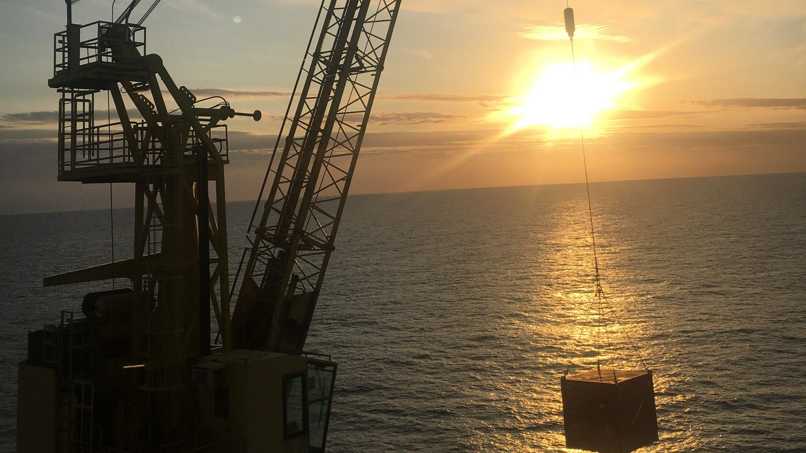
Engenheiro de produção · planejamento e gestão de projetos · performance operacionalProduction engineer · project planning & management · operational performance
Treze anos em planejamento e gestão de projetos e performance operacional — oito deles em óleo e gás offshore, meu setor mais forte, mas não o único. Desde 2025, aplico a mesma disciplina à transformação digital de uma transportadora regional: governança, compliance e automação entregues de ponta a ponta.Thirteen years in project planning, management and operational performance — eight of them in offshore oil and gas, my strongest sector, though not the only one. Since 2025 I apply the same discipline to the digital transformation of a regional transport company: governance, compliance and automation delivered end to end.
Içamento de carga ao pôr do sol, Bacia de Campos (RJ).
Foto do autor.Cargo lift at sunset, Campos Basin (RJ).
Author’s photo.
Números do currículo, setembro de 2026. Os indicadores do ERP estão na seção do projeto.Figures from the résumé, September 2026. ERP indicators are in the project section.
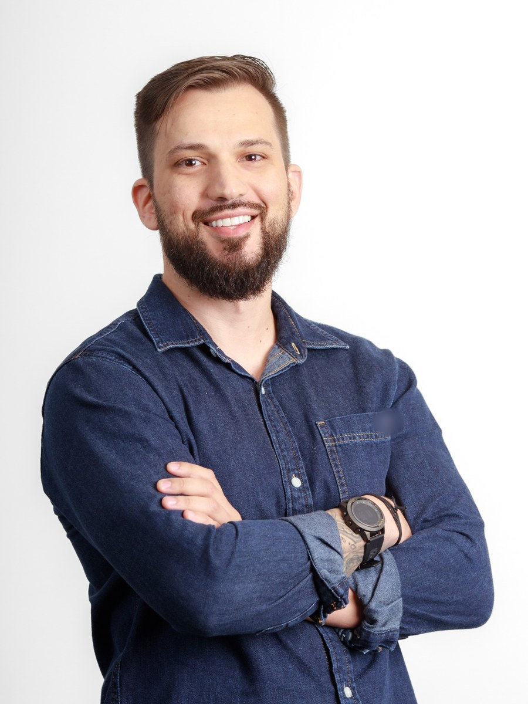
SobreAbout
Sou engenheiro de produção com 13 anos em controle de projetos e performance operacional, 8 deles em óleo e gás offshore: coordenei o suprimento offshore da Equinor no Brasil (via Accenture) e cuidei de KPIs de manutenção e performance de ativos em FPSOs na SBM Offshore. Minha base foi formada em ambientes regulados: governança de indicadores, controle de custos, continuidade da cadeia de suprimentos e compliance em SAP.
I am a production engineer with 13 years in project controls and operational performance, 8 of them in offshore oil and gas: I coordinated Equinor's offshore supply operations in Brazil (via Accenture) and looked after maintenance KPIs and asset performance on FPSOs at SBM Offshore. My foundation was built in regulated environments: KPI governance, cost control, supply chain continuity and SAP-based compliance.
Desde 2025 aplico essa disciplina à transformação digital de uma transportadora de passageiros no Norte Fluminense. Em 8 meses, a operação saiu do papel e de planilhas legadas para o Microsoft 365, com o SharePoint estruturado como um ERP leve para operações, financeiro, RH e frota, além de compliance em SST e atendimento com triagem por IA.
Since 2025 I have applied that discipline to the digital transformation of a passenger transport company in northern Rio de Janeiro state. In 8 months the operation moved from paper and legacy spreadsheets to Microsoft 365, with SharePoint structured as a lightweight ERP for operations, finance, HR and fleet, plus OHS compliance and AI-triaged customer service.
Trabalho com assistência de inteligência artificial e digo isso abertamente. O levantamento dos processos, a arquitetura, os testes e a implantação são decisões minhas. A IA acelera a execução; o método é meu.
I work with AI assistance and say so openly. Process discovery, architecture, testing and rollout are my decisions. AI speeds up execution; the method is mine.
Minha base mais sólida é o óleo e gás offshore, mas o método é o mesmo em qualquer operação complexa: mapear o processo, medir com KPIs, documentar a decisão e melhorar com quem executa. A transportadora é a prova de que isso roda fora do offshore. Busco posições sêniores em planejamento e gestão de projetos, excelência de processos e governança operacional, em indústrias reguladas dentro e fora do óleo e gás.
My strongest base is offshore oil and gas, but the method is the same in any complex operation: map the process, measure it with KPIs, document the decision and improve it with the people who run it. The transport company is proof that it works beyond offshore. I am open to senior roles in project planning and management, process excellence and operational governance, in regulated industries within and beyond oil and gas.
Entender o processo como ele acontece, com quem executa, antes de tocar em qualquer ferramenta.
Understand the process as it really happens, with the people who run it, before touching any tool.
Preferir o que a empresa já paga. Sem servidor próprio, sem licença nova, com os dados na casa do cliente.
Prefer what the company already pays for. No own server, no new license, data kept in-house.
Indicador antes e depois, versão registrada e teste em produção com quem usa.
A metric before and after, a recorded version and a production test with the people who use it.
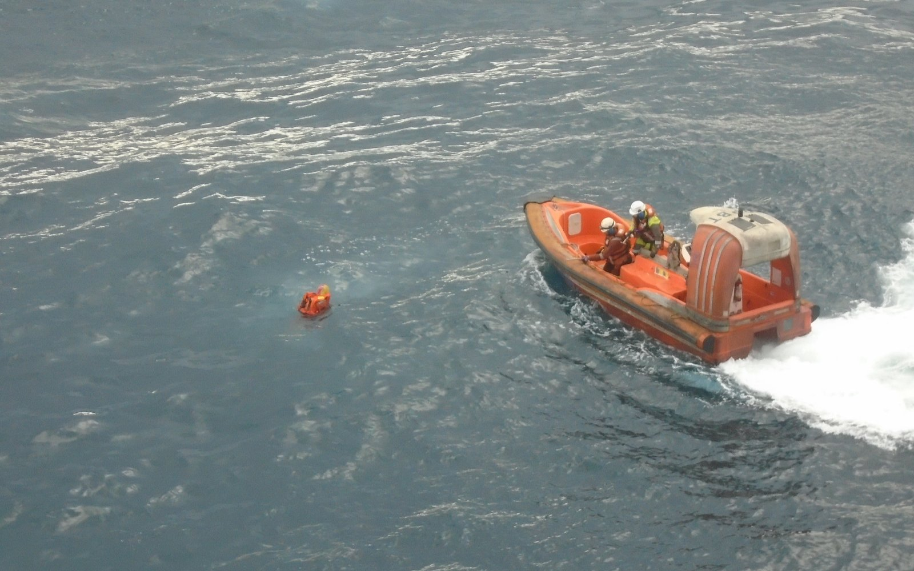
O que aprendi no mar, aplico no escritório: procedimento claro, registro de tudo e ninguém trabalhando no escuro.What I learned offshore, I apply onshore: clear procedures, everything on record and nobody working in the dark.Rafael Oertel
TrajetóriaExperience
Treze anos em quatro casas: consultoria, a conta Equinor, a SBM Offshore e, hoje, uma transportadora regional em transformação digital.Thirteen years across four houses: consulting, the Equinor account, SBM Offshore and, today, a regional transport company in digital transformation.
Nova Macabu · transporte de passageiros (13 ônibus, 60 funcionários) · Macaé, RJ · autônomo, híbridoNova Macabu · passenger transport (13 buses, 60 employees) · Macaé, RJ · self-employed, hybrid
SBM Offshore · operações de FPSO, Brasil · Rio de Janeiro · tempo integral, híbridoSBM Offshore · FPSO operations, Brazil · Rio de Janeiro · full-time, hybrid
Accenture, a serviço da Equinor · suprimento offshore da Equinor Brasil · Rio de Janeiro · tempo integral, presencialAccenture, on behalf of Equinor · Equinor Brazil offshore supply chain · Rio de Janeiro · full-time, on-site
Accenture, a serviço da Equinor · Rio de Janeiro · promovido a coordenador em 15 mesesAccenture, on behalf of Equinor · Rio de Janeiro · promoted to coordinator within 15 months
Afferolab · educação corporativa e consultoria · Rio de Janeiro · tempo integral, presencialAfferolab · corporate education & consulting · Rio de Janeiro · full-time, on-site
Fotos do autor em embarques entre 2015 e 2024. Rostos de colegas e marcas foram desfocados.
Author’s photos from offshore hitches between 2015 and 2024. Colleagues’ faces and brand marks have been blurred.
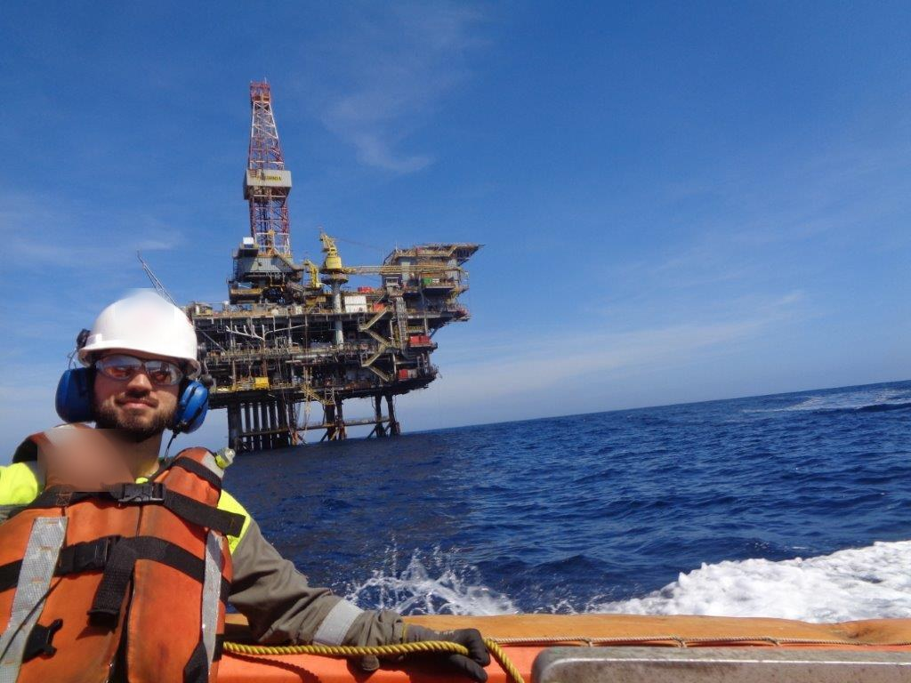
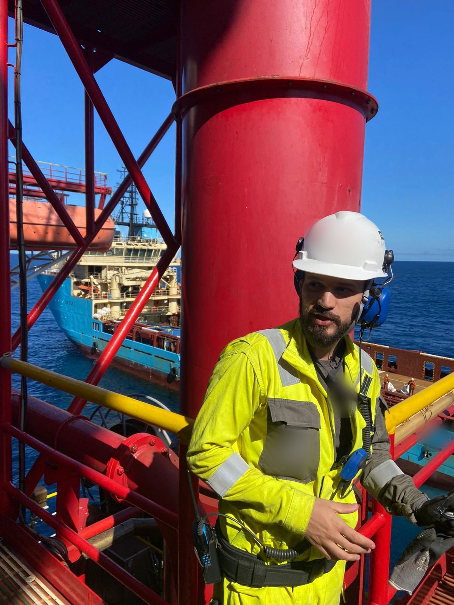
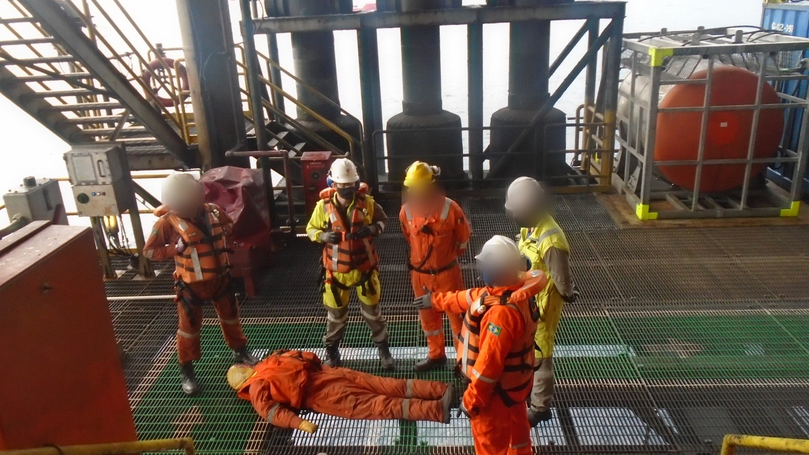
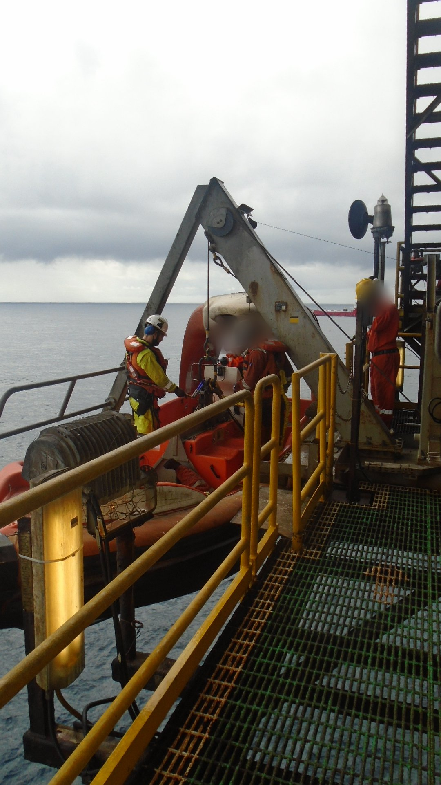
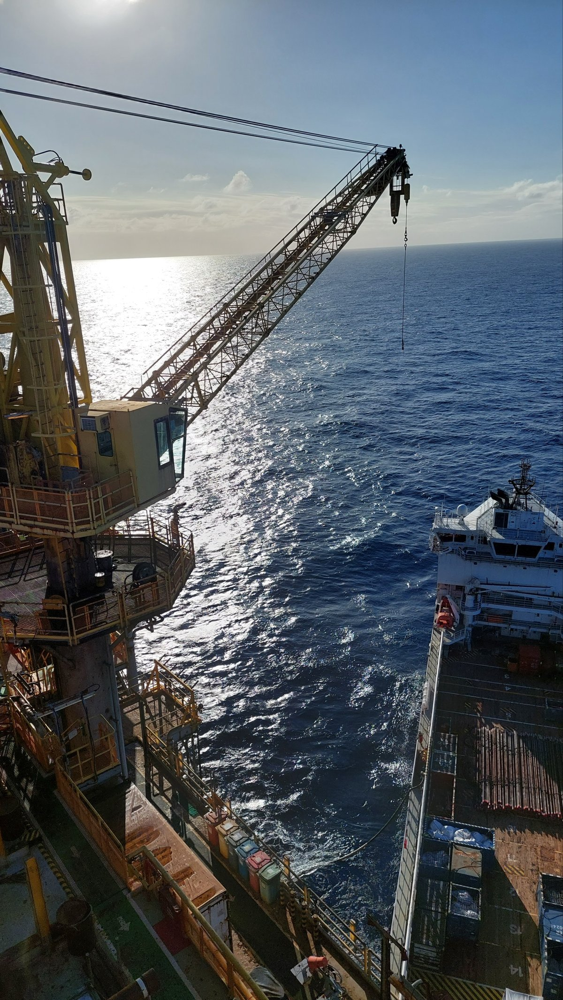
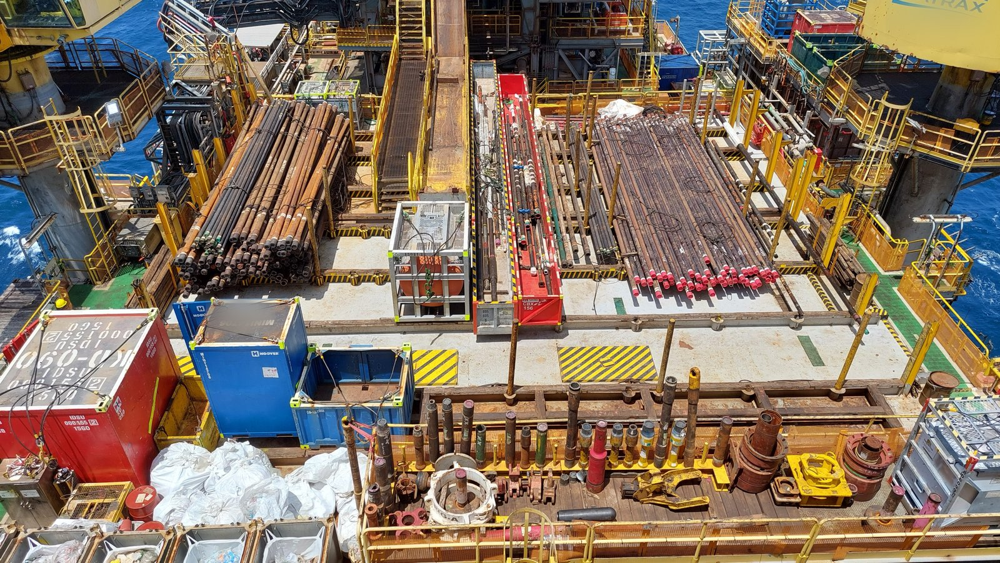
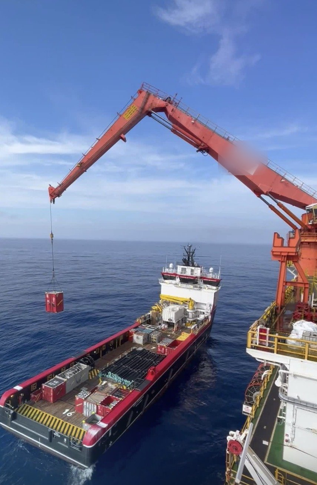
Projeto em destaque · 2025–2026Featured project · 2025–2026
Nove módulos, quatro aplicativos legados migrados e um portal para quem não tem conta corporativa. Tudo construído sobre o Microsoft 365 que a empresa já pagava, publicado como uma página estática e mantido por uma pessoa.Nine modules, four legacy apps migrated and a portal for people without a corporate account. All built on the Microsoft 365 the company already paid for, published as a static page and maintained by one person.
Papel, planilhas soltas em vários computadores e quatro aplicativos com senhas próprias: escala, diesel, infrações e atendimento. Dados em lugares diferentes, sem histórico confiável e sem visão do que estava vencendo.
Paper, loose spreadsheets on several computers and four apps with their own passwords: shift schedule, diesel, violations and customer service. Data in different places, no reliable history and no view of what was falling due.
Um único sistema com login pela conta da empresa. Cada departamento vê só os seus módulos. As listas do SharePoint são a fonte da verdade e a automação entra apenas onde algo precisa rodar sem usuário.
One system with company-account sign-in. Each department sees only its own modules. SharePoint lists are the source of truth and automation is used only where something must run without a user.
Contas fixas geradas em um clique, vencidos marcados sozinhos, aviso de infração no WhatsApp do motorista, escala projetada para o mês seguinte e um registro de cada versão publicada.
Recurring bills generated in one click, overdue items flagged on their own, violation alerts on the driver's WhatsApp, next month's shift schedule projected automatically and a record of every published version.
Deslize o diagrama para o lado →Swipe the diagram sideways →
Vencido marcado automaticamente, contas fixas por competência e vínculo direto com o fornecedor.
Overdue items flagged automatically, recurring bills by accounting period and a direct link to the supplier.
Cadastro das contas recorrentes. “Gerar mês” cria as contas do período em um clique, sem duplicar.
Register of recurring bills. “Generate month” creates the period's bills in one click, without duplicates.
Cadastro único por CNPJ ou CPF, chave que impede duplicidade e alimenta as contas.
Single register keyed by tax ID, which prevents duplicates and feeds the bills.
Abastecimentos, recebimentos e previsão de autonomia do tanque, com gráfico e exportação.
Fuelling, deliveries and tank autonomy forecast, with chart and export.
Ocorrências por gravidade, aviso ao motorista pela API do WhatsApp Business e mural mensal pronto para imprimir.
Incidents by severity, driver alerts through the WhatsApp Business API and a monthly print-ready board.
Três canais (WhatsApp, site e e-mail) em uma base única de chamados, com classificação por IA, protocolo e resposta ao passageiro pelo painel.
Three channels (WhatsApp, web and e-mail) in one ticket base, with AI classification, protocol numbers and replies to the passenger from the dashboard.
Calendário de turnos, projeção automática do mês seguinte, histórico e portal para os funcionários.
Shift calendar, automatic projection of the next month, history and a portal for employees.
Fechamento da bilhetagem: talões, caixa diário e conferência mensal.
Ticketing close: ticket books, daily cash and monthly reconciliation.
Currículos recebidos e candidatos por CPF, com histórico de contato.
Incoming résumés and candidates keyed by tax ID, with contact history.
Aplicação própria (PWA + Supabase) ligada ao menu do ERP: nove carteiras de passivos em uma fonte única, com planejado × realizado, curva ABC, modelagem de renegociação e simulação de caixa para aquisição de ativos.
Stand-alone application (PWA + Supabase) linked from the ERP menu: nine liability portfolios in one source of truth, with planned vs. actual, ABC analysis, renegotiation modelling and cash-flow simulation for asset purchases.
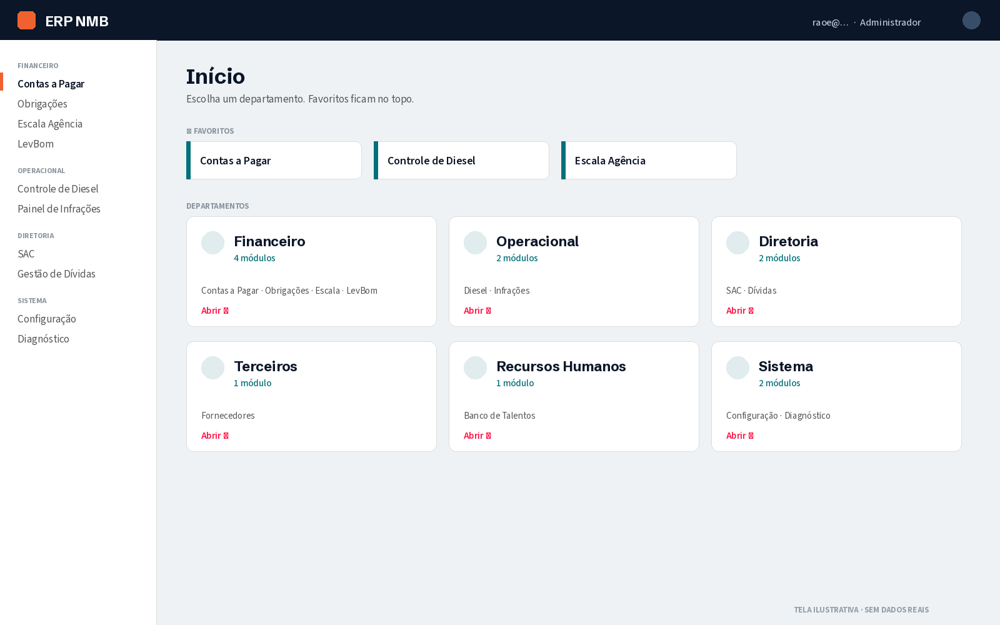
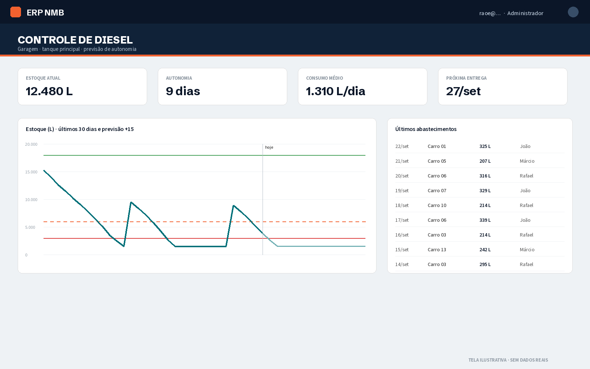
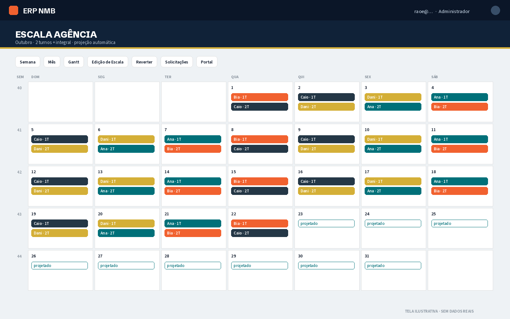
Telas ilustrativas. As capturas reais, com dados fictícios, entram junto com a demo navegável.Illustrative screens. Real captures with fictitious data arrive together with the clickable demo.
Três decisõesThree decisions
Um projeto assim é feito de escolhas pequenas. Estas três explicam o custo baixo, a velocidade e o fato de ninguém ter ficado de fora.A project like this is made of small choices. These three explain the low cost, the speed and the fact that nobody was left out.
Os painéis liam os dados por uma automação paga por operação. Passaram a ler direto pelo Microsoft Graph: tela mais rápida, custo zero por atualização e a automação sobrou só para o que precisa rodar sem usuário.
The dashboards used to read data through an automation billed per operation. They now read directly through Microsoft Graph: faster screens, zero cost per refresh, and automation left only for what must run without a user.
Os funcionários da agência não têm conta Microsoft. Em vez de comprar licenças, o portal deles entra por matrícula e senha e grava nas mesmas listas, por um webhook. A coordenação usa o ERP ou o portal, e os dois veem a mesma escala.
Agency staff have no Microsoft account. Instead of buying licenses, their portal signs in with an employee number and password and writes to the same lists through a webhook. Coordinators use the ERP or the portal, and both see the same schedule.
Cada aplicativo legado entrou no ERP com importação única, conferência registro a registro e o sistema antigo no ar até a validação em produção. Quatro migrações, zero perda.
Each legacy app entered the ERP with a one-off import, record-by-record checks and the old system kept online until validation in production. Four migrations, zero loss.
Problema, solução, um passeio pelos módulos e os números. O vídeo entra quando a versão 1.0 (design) estiver no ar.
Problem, solution, a walk through the modules and the numbers. The video goes live with version 1.0 (design).
Uma cópia do ERP com empresa fictícia e dados gerados, sem login, para quem quiser clicar.
A copy of the ERP with a fictitious company and generated data, no sign-in, for anyone who wants to click around.
Registro de marcosMilestone log
Este registro é atualizado a cada versão publicada. Mostra o caminho, não só o resultado.This log is updated with every published version. It shows the path, not just the result.
Entrada na empresa: papel, planilhas legadas e nenhum ambiente colaborativo. Começa a implantação do Microsoft 365 e a estruturação dos sites do SharePoint por área.
Joining the company: paper, legacy spreadsheets and no collaborative environment. Deployment of Microsoft 365 begins, with SharePoint sites structured by department.
SharePoint estruturado como ERP leve: sites por departamento, bibliotecas de documentos e fluxos de dados substituindo controles manuais em operações, financeiro, RH e frota. Primeiro fluxo estruturado de contas a pagar.
SharePoint structured as a lightweight ERP: department sites, document libraries and data flows replacing manual controls across operations, finance, HR and fleet. First structured accounts-payable workflow.
Primeiro aplicativo: escala por turnos acessível pelo celular, três níveis de acesso e custo zero. Nasceu de uma planilha impressa na parede.
First app: a shift schedule you can open on a phone, three access levels and zero cost. It started as a printed spreadsheet on the wall.
Ocorrências de velocidade e área restrita lidas do SharePoint; o motorista recebe o aviso no próprio telefone, com cópia para a gestão.
Speeding and restricted-area incidents read from SharePoint; the driver gets the alert on their own phone, with a copy to management.
Aplicação multiusuário (PWA + Supabase) com acesso por perfil e trilha de auditoria: planejado × realizado, curva ABC, modelagem de renegociação e simulação de caixa para aquisição de ativos.
Multi-user application (PWA + Supabase) with role-based access and an audit trail: planned vs. actual, ABC analysis, renegotiation modelling and cash-flow simulation for asset purchases.
WhatsApp, site e e-mail viram chamados com protocolo, categoria e prazo, classificados por IA. Captura automática do e-mail três vezes ao dia.
WhatsApp, web and e-mail become tickets with protocol, category and deadline, classified by AI. Automatic e-mail capture three times a day.
Página estática no GitHub Pages, login corporativo, Microsoft Graph e listas do SharePoint. Automação só onde algo precisa rodar sem usuário.
Static page on GitHub Pages, corporate sign-in, Microsoft Graph and SharePoint lists. Automation only where something must run without a user.
Login e permissões por grupo, setup automático das listas, Contas a Pagar, Fornecedores e Obrigações. Mais de 300 contas importadas por competência.
Sign-in and group permissions, automatic list setup, Accounts Payable, Suppliers and Recurring obligations. Over 300 bills imported by accounting period.
Gerar mês e vencido automático. Infrações, SAC, Diesel e Escala migrados para dentro do sistema, portal dos funcionários no ar e auditoria de desempenho registrada.
Generate month and automatic overdue flags. Violations, customer service, Diesel and Shift Schedule migrated into the system, employee portal live and a performance audit on record.
Contas a Pagar fechado com quem usa, Fluxo de Caixa e LevBom saindo do protótipo, desempenho e design system. A versão 1.0 marca a gravação do vídeo e a demo pública.
Accounts Payable closed with its users, Cash Flow and LevBom leaving prototype stage, performance and a design system. Version 1.0 marks the video recording and the public demo.
Documentos e controlesDocuments and controls
Roadmaps versionados, relatórios impressos gerados no navegador, controles por competência e um framework de compliance. Imagens ilustrativas; os documentos reais entram anonimizados.Versioned roadmaps, print reports generated in the browser, period-based controls and a compliance framework. Illustrative images; the real documents come in anonymized.
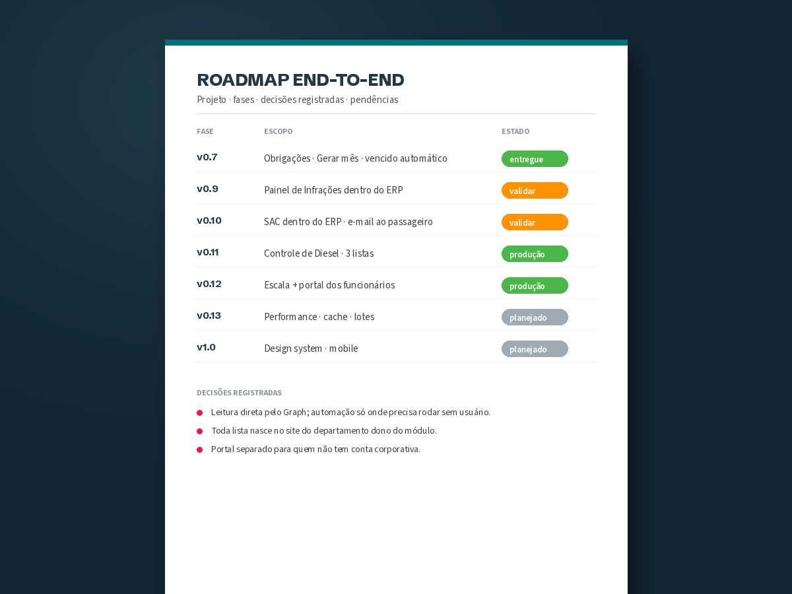
Cada projeto tem um roadmap com fases, decisões registradas e lições técnicas. É o documento que permite outra pessoa continuar.
Every project has a roadmap with phases, recorded decisions and technical lessons. It is the document that lets someone else carry on.
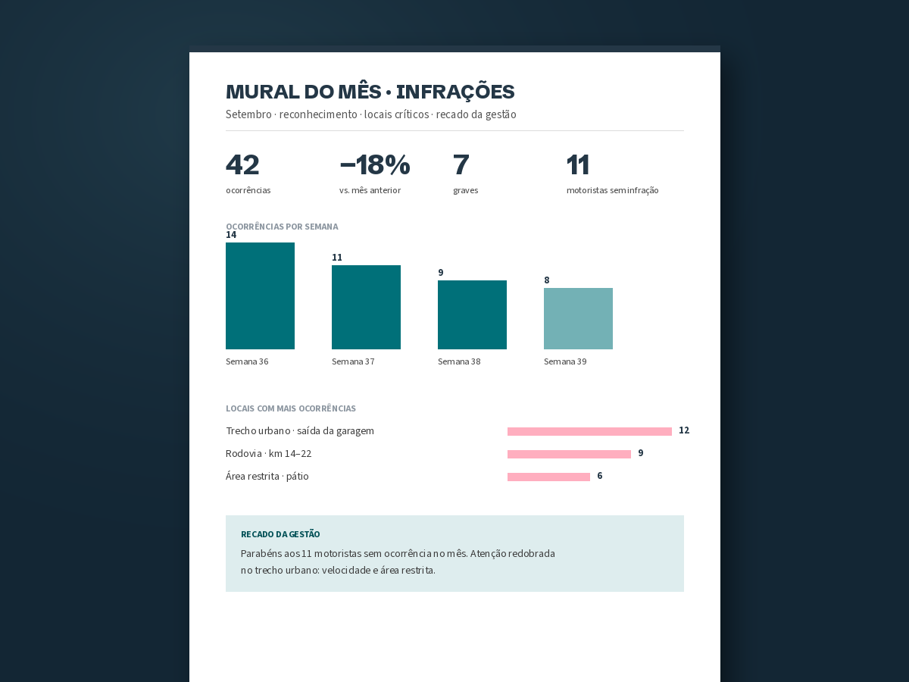
Relatório A4 gerado no navegador: números do mês, reconhecimento de quem não teve ocorrência e recado da gestão.
A4 report generated in the browser: the month's numbers, recognition for drivers with no incidents and a note from management.
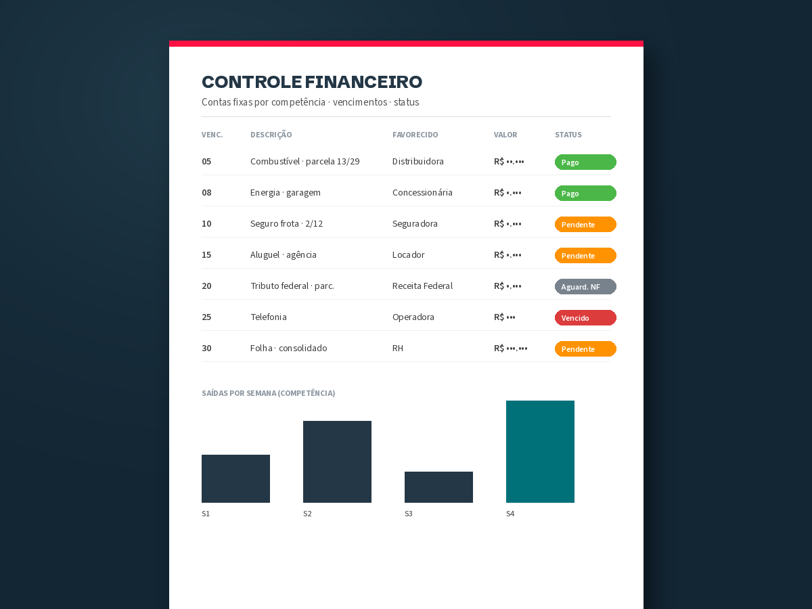
Contas fixas, vencimentos e status em uma visão só, alimentada pelas mesmas listas que o sistema usa.
Recurring bills, due dates and status in one view, fed by the same lists the system uses.
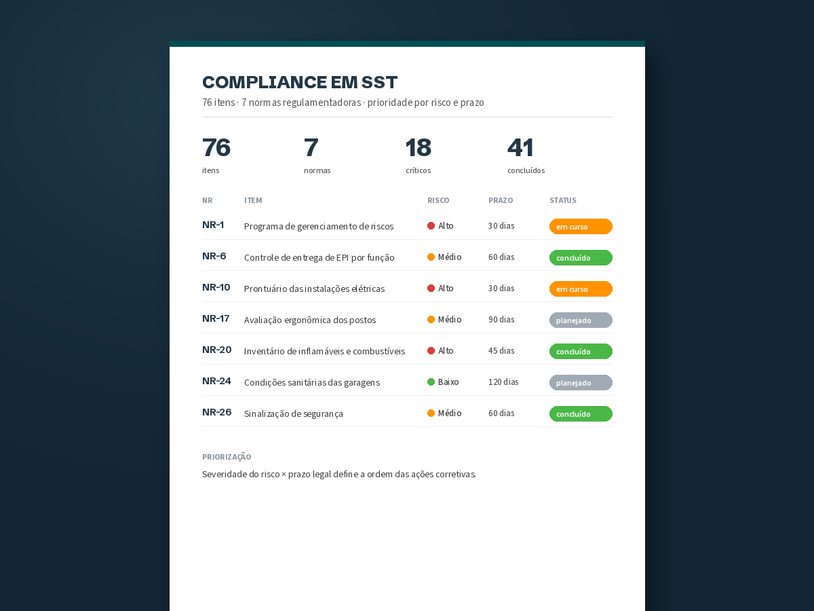
76 itens em 7 normas regulamentadoras, com ação corretiva priorizada por severidade de risco e prazo legal.
76 items across 7 regulatory standards, with corrective actions prioritized by risk severity and legal deadline.
IndicadoresIndicators
KPIs e resultados de projetos de consultoria e de operação offshore: o indicador que criei, o problema que ele resolvia e o resultado obtido. Hoje: modelos de Excel em modo de apresentação — print e descrição, com acesso a uma versão navegável em página sobreposta, sem download do arquivo original.KPIs and results from consulting projects and offshore operations: the indicator I created, the problem it solved and the outcome. Today: Excel templates shown presentation-style — a screenshot and description, with access to a navigable version in an overlay page, no download of the original file.
Modelo de consultoria para acompanhar orçamento por conta, com alerta de desvio e fechamento mensal.
Consulting template to track budget by account, with variance alerts and monthly close.
Planilha de disponibilidade e confiabilidade de ativos, com backlog priorizado, usada em FPSOs.
Asset uptime and reliability spreadsheet with a prioritized backlog, used on FPSOs.
Modelo de programação de embarcações e manifesto de carga, com OTIF e cargas perigosas (IMDG).
Vessel scheduling and cargo manifest template, with OTIF and dangerous goods (IMDG).
Em preparação: cada planilha entra como print + descrição assim que estiver higienizada (sem dado de cliente ou empregador) e adaptada para a versão digital navegável.
In preparation: each spreadsheet goes up as a screenshot + description once it is sanitized (no client or employer data) and adapted into the navigable digital version.
ContatoContact
Aberto a posições sêniores em planejamento e gestão de projetos, excelência de processos e governança operacional — em indústrias reguladas, dentro e fora do óleo e gás — e a trocar ideias sobre Microsoft 365 na prática.Open to senior roles in project planning and management, process excellence and operational governance — in regulated industries, within and beyond oil and gas — and to comparing notes on Microsoft 365 in practice.
Preencha os campos abaixo. Seu aplicativo de e-mail abre com a mensagem pronta, endereçada diretamente a mim — sem formulário em servidor de terceiros.
Fill in the fields below. Your email application opens with the message ready, addressed directly to me — no third-party server form involved.